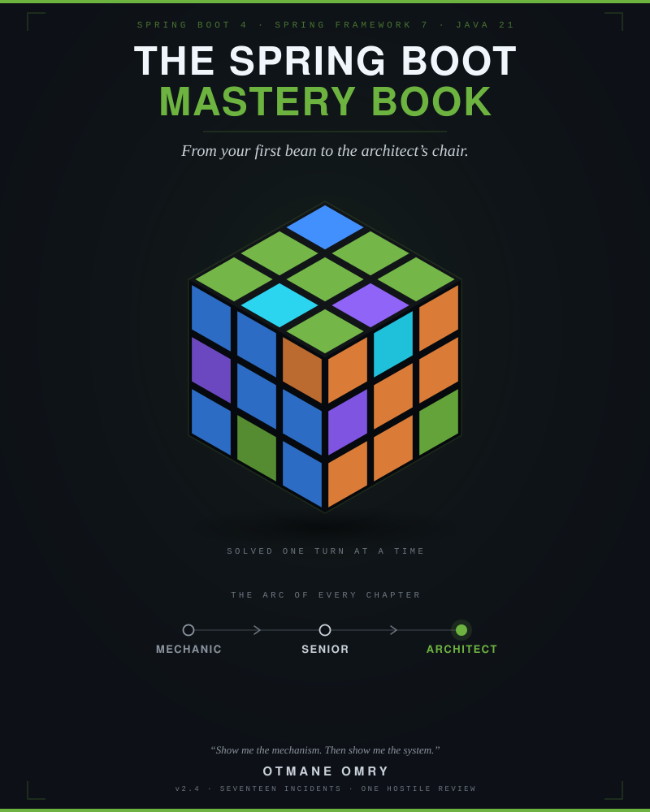

The Spring Boot Mastery Book
Show me the mechanism. Then show me the system. From your first bean to the architect's chair, in seventeen incidents and one hostile review. Spring Boot 4 / Spring Framework 7 / Java 21.
Otmane Omry
Software Engineer & Développeur Full Stack · Java, Spring Boot, React, Angular
otmaneomry.github.io · linkedin.com/in/omryotmane
v2.4, November 10, 2026 · pure-Java edition · runnable labs in labs/ · version history in Appendix I · version-sensitive facts audited in docs/VERSION-CLAIMS.md
What this is. This book follows the roadmap.sh/spring-boot tree, with every topic weighted toward what a senior architect needs in 2026. Some things are left out on purpose: Appendix H lists the omissions and where to study them. The book is taught as one continuous story, built to carry a reader from a first Spring bean to senior-architect judgment. The protagonist, Kenza, spent eight years writing frameworkless Java at Meridian Freight, a logistics firm allergic to frameworks: object graphs hand-wired in
main(), raw JDBC, an embedded Jetty configured line by line. She knows Java well and Spring not at all when she joins the team behind a bug-bounty platform. One year of outages, audits, lost updates and 3 a.m. pages rebuilds her from someone who hand-wires everything into a principal architect. Every chapter is a realistic production incident that forces one roadmap topic to senior depth. Then the chapter climbs to the system-level call behind it: which quality attribute was at stake, what the decision record says, which alternatives lost and why. You remember the concepts through what happened to Kenza, and you practice deciding what she should do next before the text tells you.Who this book is for. This book is written for two kinds of reader. If you know core Java (generics, collections, lambdas, basic concurrency) and basic SQL but nothing about Spring, you sit in Kenza's seat. You learn every mechanism with her, from first principles. Core Java is the only hard prerequisite, but the climb is fast, and the Part primers are your handholds. Each Part opens with a half-page primer in plain prose on its core nouns. Read it if Spring is new to you, and skip it without loss if Spring is your day job. If you already run Spring in production, read the same incidents for what sits above the mechanism: styles, boundaries, consistency, the -ilities, the decision reps. Every chapter opens at a level a beginner can reach and climbs to the architecture on top, and it talks down to neither reader. The arc inside every chapter is the arc of the book: mechanic → senior → architect.
Lineage. This is the pure-Java edition. Its prose, cast, incidents, four-beat debriefs and architect layer evolved from earlier drafts that are not published here. It ships with companion artifacts.
examples/holds commented.javadrill files, one folder per topic.labs/is a multi-module Maven project (Spring Boot 4 · Java 21) with six labs: a first application you can run, then five of this book's traps as green tests you can break yourself (cd labs && ./mvnw test).
How to read this book
Four passes, each at its own speed:
- The story pass: read it like a novel. The book asks one thing of you: at every ⏸ Your call beat, stop and commit to an answer, out loud or in a margin note, before you read the reveal. The plot pauses exactly where an architect would have to decide. Predicting is the rep: retrieval practice disguised as suspense.
- The debrief pass: go back to the
## The debriefsections only. Each one opens with the chapter's kill-shot (the interview question the chapter prepares you to answer) and its follow-ups. Answer aloud for 90 seconds before you read on, then tick each of the four beats you said: claim, mechanism, trade-off, failure mode. Three ticks pass. With fewer, re-read the scene named in the story anchors and try again the next day. The model answer follows below a rule, in the same four beats (Claim → Mechanism → Trade-off → Failure mode). After it come THE ARCHITECT'S LENS (which -ility was at stake, what the ADR records, which alternatives were rejected and why), the story anchors and the interview ammo. Every chapter has one kill-shot, numbered by chapter: kill-shot 3 is Chapter 3's question. - The decision pass: replay only the ⚖ Your move, architect forks. Each is a realistic decision with three options. Commit, then check your reasoning against the revealed trade-offs. Most forks replay a decision you just watched. For those, argue the losing options at full strength before the reveal. Ch.15 hands you the rubric instead of the answer, and Ch.16 and 17 hand you the pen. One warning from the index in Appendix D.1: the balanced option wins often but not always. It loses outright at least twice, and one winning call is overturned at the hostile review. If you catch yourself picking the moderate option by pattern instead of analysis, you've stopped doing the rep. Watch which kind of door each decision is. Two-way decisions reward keeping options open. One-way doors (the public contract, the consistency model) reward committing decisively on today's information. At least two forks in this book are one-way doors where "keep it purchasable" is the documented trap.
- The anchor drill: cover the page, recall the scene (the 28-second dashboard…), re-derive the mechanism, then name the -ility it threatened. If the scene won't surface both, re-read that chapter.
The four-week path. If you have an interview date, read, run and say aloud on this schedule; a chapter takes about 35 minutes to read and 10 to drill.
| Week | Read | Run | Say aloud |
|---|---|---|---|
| 1 | Parts I and II (Ch.1 to 4) | lab-00, lab-01 | kill-shots 1 to 4 |
| 2 | Parts III and IV (Ch.5 to 9) | lab-02, lab-05 | 5 to 9, then 1 to 4 again |
| 3 | Part V (Ch.10 to 13) | lab-03, lab-04 | 10 to 13, then 5 to 9 again |
| 4 | Part VI and Ch.17 | nothing new | all 17, cold, twice |
The recall hooks:
- B.E.A.N.S.: Bootstrap · Endpoints · Access-to-data · Non-functional · Scale.
- The Request Journey: socket → connector → filter chain → DispatcherServlet → controller →
@Transactionalproxy → repository → persistence context → DB → back. It is born on the Wall in Chapter 5, annotated all year, and diagrammed in Appendix E. - The senior answer skeleton: Claim → Mechanism → Trade-off → Failure mode. It is Rachid's whole curriculum, in four beats.
- The -ilities ledger: scalability · availability · evolvability · performance · security · operability · cost, plus the ones that specific incidents add (integrity, maintainability, testability). They are the architect's subject: every major decision in this book names which of them it serves and which it taxes. An answer that names no -ility is a developer answer.
- The ADR trail: Glasshouse numbers its Architecture Decision Records, and so does this book. When a chapter mints one (context → decision → consequences, half a page, dated), it joins the trail in Appendix F. A decision you can't show a record for gets re-litigated forever.
- The story anchors: every gotcha is welded to a scene. Recall the scene, and the mechanism comes with it.
A note on temperature. The chapters run hot by design, and the incident prose stays hot. The flat ground is deliberate and lives elsewhere: the plain-prose primers before each Part and the debriefs after each chapter are the rest stops. Use them that way, because the narration will not slow down for you.
Spaced callbacks. From Chapter 2 onward, each chapter deliberately brings back one or two earlier incidents ("this is February's proxy ghost wearing a new coat"). When you hit a callback, pause one beat and re-derive the original mechanism from memory before reading on. That is the spacing schedule at work.
The cast
| Who | Role | Why they matter |
|---|---|---|
| Kenza | Protagonist. Eight years of frameworkless Java at Meridian Freight: hand-wired object graphs, raw JDBC, Jetty configured by hand. Strong Java, zero Spring | Her plain-Java instincts are the book's recurring device: sometimes a head start, sometimes the trap. Her arc: humbled → mechanic → debugger → teacher → incident commander → system decider → architect. Watch how early she starts making calls about Atrium instead of about code. |
| Rachid | Principal architect, employee #4, stepping back at year's end | Reviews in green ink and answers questions with smaller questions. His catchphrase ("Show me the mechanism") is the book's thesis. His quieter second question is "and which -ility does it spend?" |
| Imane | Junior engineer, joins in June | The mirror arc: she asks the questions everyone avoids and ships the book's second self-invocation bug. She ends the year receiving the Chapter-1 treatment from Kenza. |
| Youssef | SRE / platform engineer | Owns Kubernetes, on-call, and the Monday brick ceremony. The voice of operational debt, and so of operability, the -ility developers forget until 3 a.m. |
| Leila | Product manager | Every technical failure reaches her as money: the cost column of the ledger. She argues the user's side of every trade-off and teaches Kenza that stating a trade-off is a negotiation, not a lecture. |
| @sable | Top external researcher on the platform's own program | Never appears in person, only through reports, retest comments and one late-night email. The book's conscience: the outside world, always testing your claims. |
| Malika | Triage lead | The human face of the workflows the code keeps breaking. Because of her, "data integrity" always has a name attached. |
The company: Glasshouse is a bug-bounty and vulnerability-disclosure platform (a mini HackerOne). Companies run Programs, Researchers submit Reports, Triagers validate and route them, and Admins manage programs and payouts. The core system is a seven-year-old Spring monolith codenamed Atrium (Spring Boot 4.0.x, Java 21, Maven, PostgreSQL, Kubernetes). It is later fronted by a gateway, with one service split out where the seam is real. Glasshouse dogfoods itself through its own public program, Stonethrow, because people who live in glass houses should invite the stones.
The furniture (recurring memory anchors):
- The Wall: the do-not-erase whiteboard where the Request Journey is born (Ch.5) and annotated all year. It also accumulates the context map: the borders inside Atrium that eventually decide what splits and what stays.
- "Show me the mechanism.": Rachid's catchphrase. It passes down the succession chain until Imane hears it from Kenza in the book's final line.
- The Canary: the dented rubber canary on the desk of whoever owns the gnarliest bug. You explain the problem to it, out loud, before you may escalate to a human.
- The Brick: the pager-shaped relic handed over every Monday with whatever on-call wisdom the outgoing person has the dignity to admit.
- The green pen: Rachid reviews on paper, in green. Where the pen ends up is how the book ends.
- The ADR binder: a thin, unglamorous folder in the repo,
docs/adr/. It starts this book nearly empty and fills as you read.
Contents
Part I: The Craft
- The Review. Her first PR gets 47 green-ink comments. Clean code, SOLID, constructor injection and DTOs at the boundary, with the dependency rule, the first seam of a modular monolith, and ADR-001 underneath them.
Part II: The Container
- The Container. A startup crash and a cross-user data leak. IoC/DI, scopes, the bean lifecycle and circular dependencies, then architecture as something you enforce (fitness functions).
- Smoke and Mirrors. Triage updates half-save in production. AOP, proxies and self-invocation, then the boundary between leaning on the framework and fighting it.
- The Magic Show. A dependency bump makes a bean vanish, only in prod. Auto-configuration, conditions and config precedence, then evolvability as a supply-chain property.
Part III: The Request
- The Front Door. @sable reports that the API leaks its floor plan. The Request Journey, validation and
ProblemDetail, then API design as contract governance. - The Pool. Launch-day 503s with idle CPUs. Thread-per-request, pool exhaustion and timeouts, then availability math: queues, bulkheads, blast radius.
Part IV: The Data
- The Thousand Queries. The 28-second dashboard. Persistence context, N+1 and
LazyInitializationException, then performance as a designed property. - The Silent Commit. Half-saved failures and lost updates. Transactions, rollback rules and locking, then consistency models chosen on purpose.
- The Proxy You Didn't Write. Spring Data, projections, migrations and pool sizing, then the aggregate boundary, where DDD starts paying rent.
Part V: Production
- The Breach That Wasn't. @sable's critical against Glasshouse itself. The filter chain, JWT and CSRF/CORS, then security architecture: token boundaries, trust zones, zero-trust posture.
- Forty Minutes. The CI suite nobody trusts. Slices, context caching and Testcontainers, then the test pyramid as an architectural fitness function.
- Three A.M. Paged blind, and later Kubernetes kills healthy pods. Actuator, probes and metrics, then observability as a designed property with an SLO attached.
- The Cascade. One vendor outage takes down everything. Caching, async and circuit breakers, then resilience composition: backpressure, idempotency, honest degradation.
Part VI: The Architect
- The Split. "Microservices by Q3." Bounded contexts, the strangler fig, sagas and the outbox, the modular-monolith defense: argued from both sides, on the record.
- Faster. Idle threads burn money. Virtual threads vs reactive, native image, then runtime selection as a decision memo on cost per -ility.
- The Architect's Chair. A vague spec, a final design review, a green pen changing desks. System design, the five debug drills, reading framework source and mentoring.
Capstone
- The Hostile Review. Six months later, an acquirer's hired guns run a due-diligence architecture review. Kenza defends the whole system, every chapter's decision attacked in one room, and the reader sits the exam with her.
Appendices: A. coverage map · B. story-anchor index · C. the five debug drills · D. cadence · E. the Wall, rendered · F. the ADR trail · G. the Architect's Principles & flashcard index · H. the omissions & where to study them · I. version history